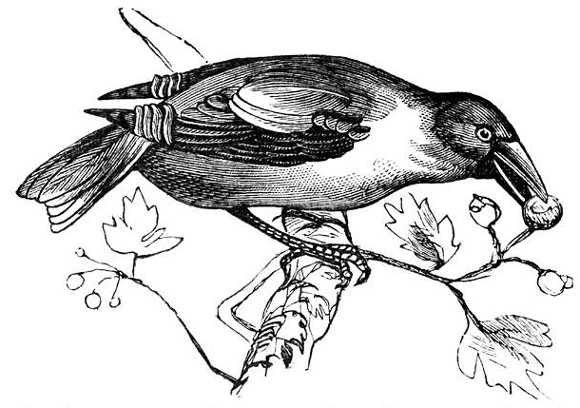

Entrepreneurship is difficult in many aspects, but its core is something quite the opposite. The skilled entrepreneur doesn't view the undertaking as a burden. Rather, starting things is an expression of creativity, a natural extension of identity. Saras Sarasvathy hits the description of that starting moment in Effectuation—
"begin with who you are, what you know, and whom you know, and immediately start taking action and interacting with other people."
You can see how this would be easy for the right type of person. For example, someone that loves talking about his ideas. Or, someone that enjoys her skills, craft, or creativity. Perhaps someone with a strong sense of purpose, a sense of urgency about doing good work.
It turns out that the process of entrepreneurship—and many other creative pursuits—have at their foundation a lightness of spirit, a curiosity about one's identity, a feeling of freedom that whatever happens will be the right thing. The closer you look at it, the more you realize that there is no way to do it wrong. Except, of course, by not doing it at all.
